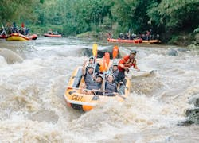
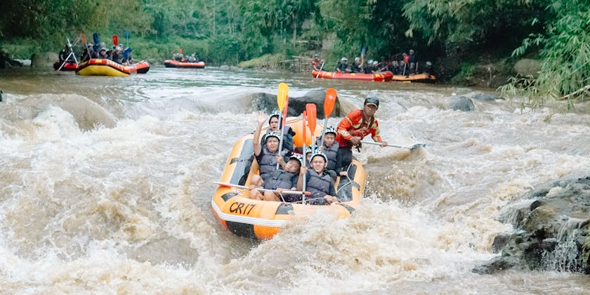

Choose the river experience that matches your comfort level. Our guides help every guest prepare, paddle safely, and enjoy the best white water California has to offer.



Choose the river experience that matches your comfort level. Our guides help every guest prepare, paddle safely, and enjoy the best white water California has to offer.

The beginner trip is perfect for first-time rafters, families, and guests who want a fun but comfortable river experience. This trip follows calmer sections of the river with smaller rapids and plenty of time to practice paddling skills. Guides explain safety instructions before launch and stay close throughout the route. It is a great choice for anyone who wants excitement without taking on the most intense white water.

The expert trip is built for confident rafters who are ready for stronger rapids and a faster pace. Guests should be comfortable paddling hard, following guide commands quickly, and getting splashed by powerful white water. This adventure travels through more challenging river sections with bigger drops and tighter turns. It is the best choice for thrill seekers who want a demanding and memorable California rafting experience.

The canyon day trip gives groups a balanced mix of scenery and splashy rapids. Guests paddle through winding river bends, pause for canyon views, and enjoy moderate white water that keeps the day exciting without feeling overwhelming. This trip is ideal for school groups, friends, and returning beginners who want a little more adventure while still traveling with patient, safety-focused guides.
| Trip | Difficulty | Length | Best For |
|---|---|---|---|
| Beginner Trip | Easy | Half Day | Families and first-time rafters |
| Canyon Day Trip | Moderate | Full Day | Groups wanting scenery and rapids |
| Expert Trip | Challenging | Full Day | Experienced thrill seekers |
Tell us your rafting experience level, group size, and preferred trip date. We can help you choose the trip that fits your group best.
Contact Us to Plan Your Trip